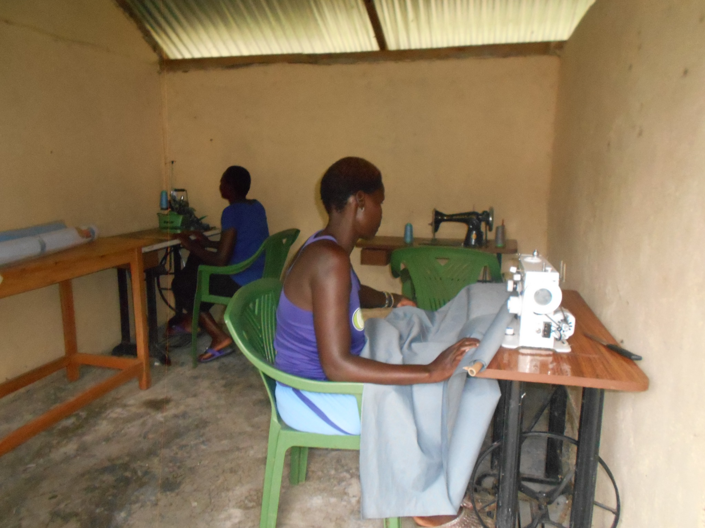
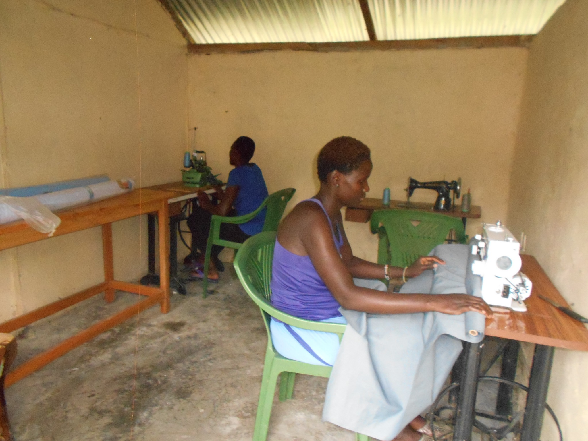
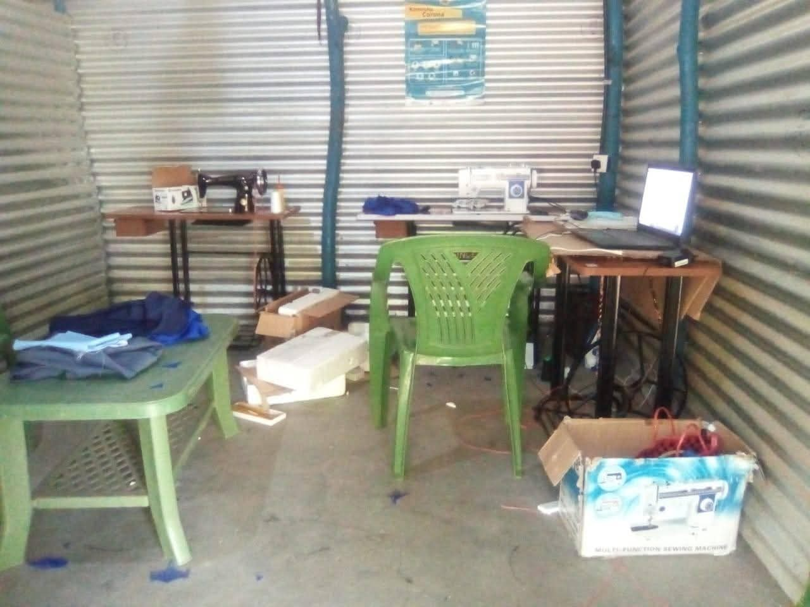

The KWEPU Tailoring & Textile Skills Project equips women and young people with practical garment-making skills that can open pathways to self-reliance, employment and entrepreneurship.
Practical skills
Participants learn through hands-on use of sewing equipment and develop experience in garment production.
Local production
The programme includes clothing, school uniforms and reusable sanitary towels, connecting livelihoods with real community needs.
Centre vision
KWEPU seeks partners to help establish a properly equipped training and production centre for more women and young people.
Learn. Practice. Produce. Earn.
KWEPU’s goal is not simply to offer training. The project is designed as a pathway from practical learning to production, livelihoods and community impact. With the right equipment, materials and technical support, participants can build skills they can use to earn income, support their families and develop local enterprise.
Skills training already in practice



A bigger vision for girls
A major long-term ambition is to build enough local production capacity to help provide reusable sanitary towels to schoolgirls across Rusinga Island. This is a future objective, not a claim that every school is already being supplied. KWEPU sees an opportunity for locally trained women and young people to develop livelihoods while producing items needed by families and schools.
Help build a well-equipped skills centre
KWEPU welcomes partners who can contribute sewing equipment, training infrastructure, technical expertise, materials, entrepreneurship development and market opportunities.
Explore partnership opportunities